0x02 · Achievements
My Achievements
My journey
2012 → Now
01 Educational attainment
- 1KindergartenSLU SVPBakakeng Norte (old site), Baguio CityS.Y. 2012–2013
 Uniform
Uniform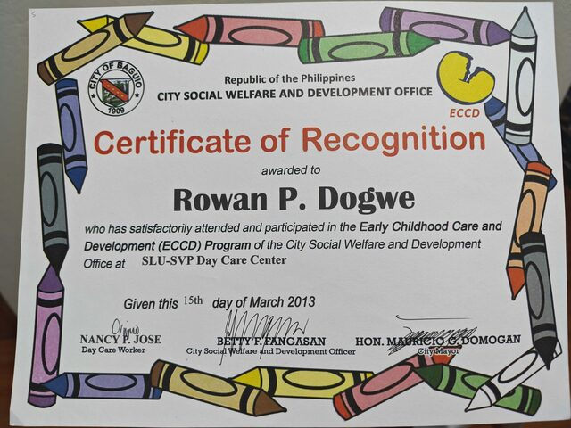
Certificate - 2ElementaryApolinario Mabini Elementary SchoolSalud Mitra, Baguio City2013–2019
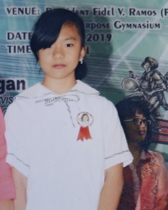
Uniform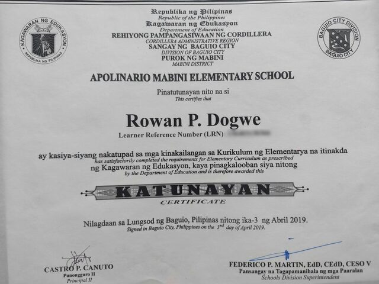
Katunayan - 3UniformHigh schoolBaguio City National High SchoolGov. Pack Road, Baguio City2019 – Jun 2023
 With Honors
With Honors - 5Senior high · ICTInformatics Institute – BaguioDecibar Bldg., 65 Bonifacio St., Baguio City2024–2026
 Graduation
Graduation- With HonorsAcademic Excellence
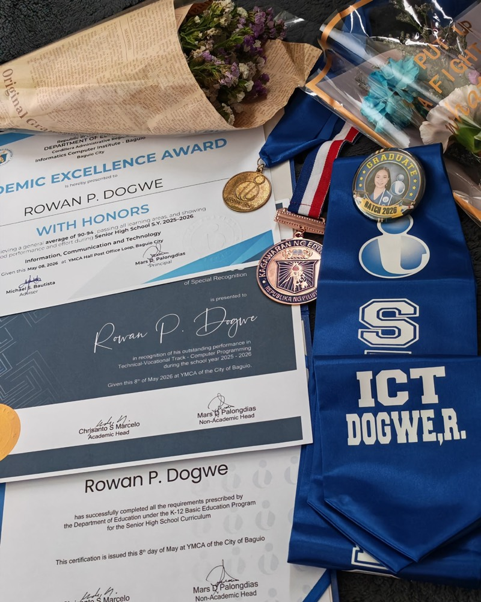
All awards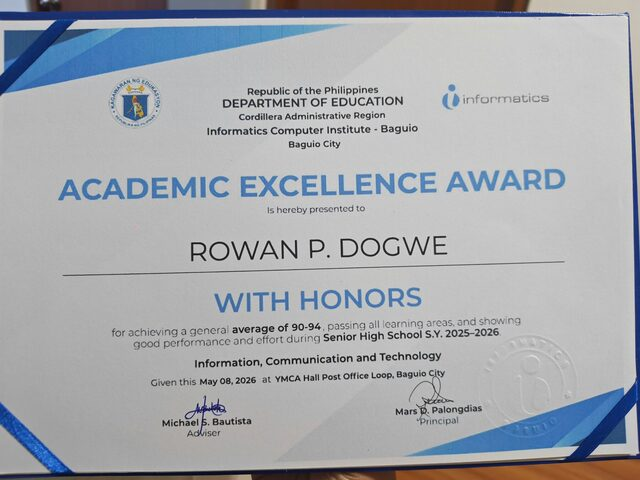
Excellence Programming
Programming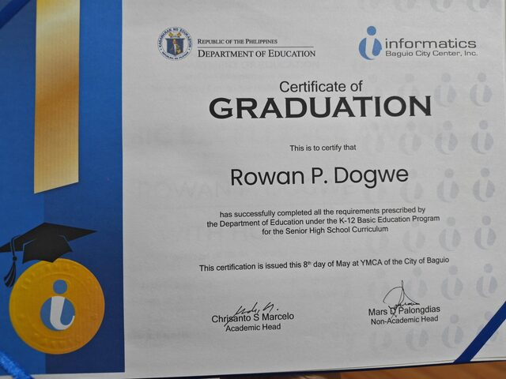
Graduation - OutstandingComputer Programming
- With HonorsAcademic Excellence
- 8College · BSCSUniversity of the CordillerasGov. Pack Road, Baguio City2026 – Present
 UC ID
UC IDWorking student and living independently (self-funded)
02 Extracurricular activities & recognitions
- 4Sports · Mar 2022 – Dec 2024Combatics Competitions 2022–20241/4
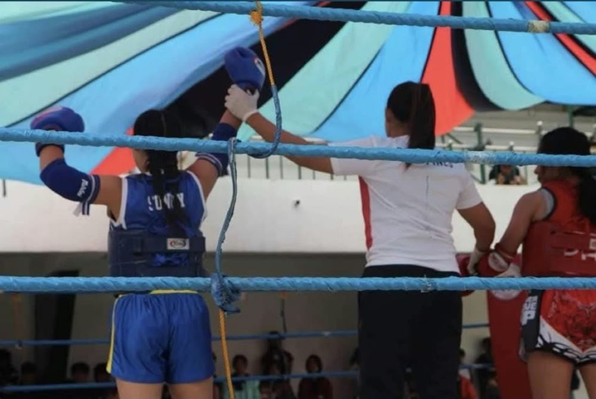
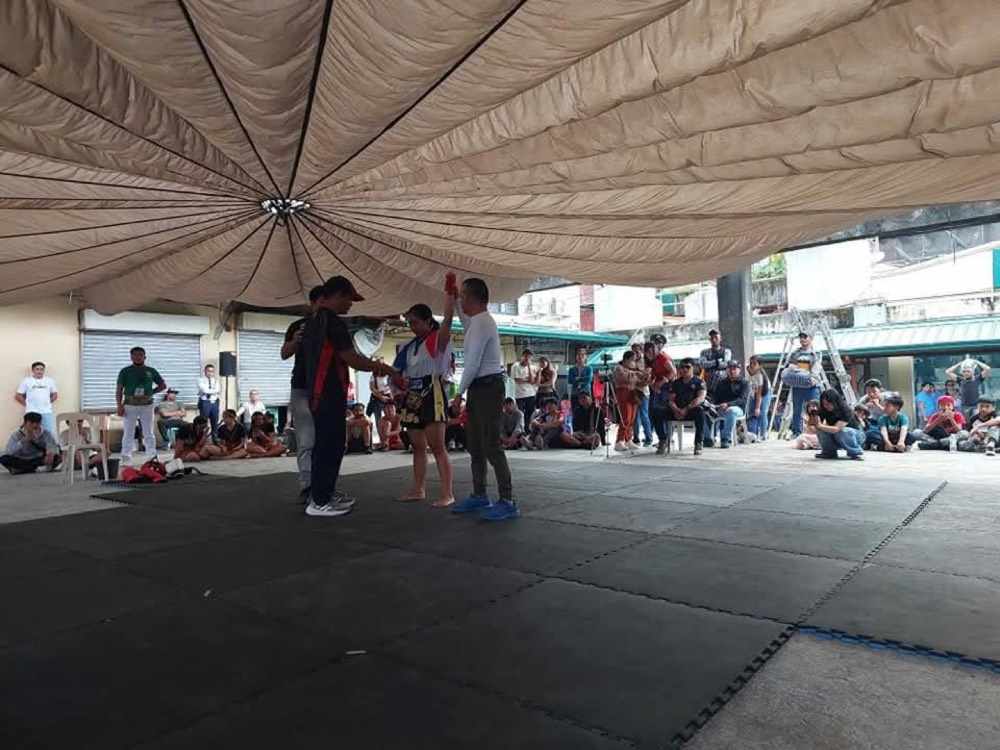
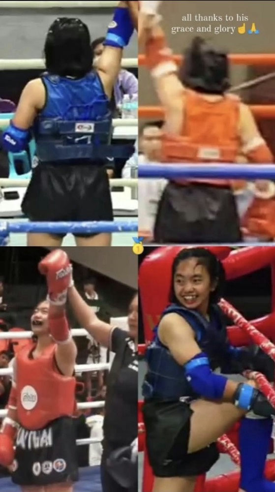
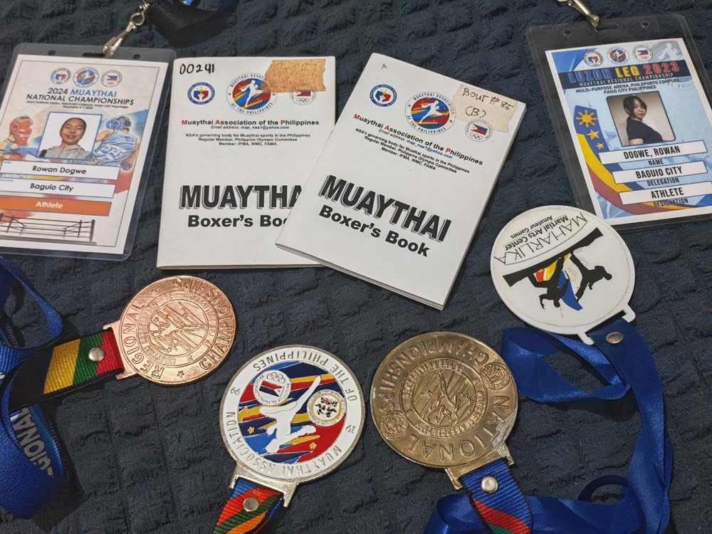
- Muay ThaiGoldNational Championship · Pasig
- SilverLarong Pang-Lungsod · Baguio
- BronzeRegional Leg · Pasig
- KickboxingGoldMaharlika event · Baguio
- 6Pageant · Mar 2025Ms. Informatics 2025
- Ms. Articulate
- Best in Evening Attire
- Best in Talent
- Best in Sports Wear
- Ms. Darling of the Crowd
1/2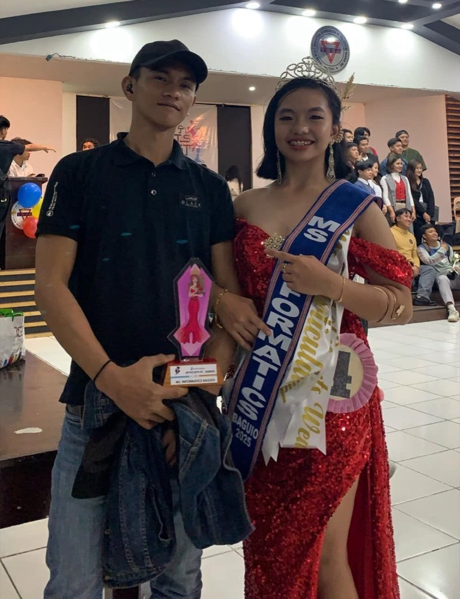
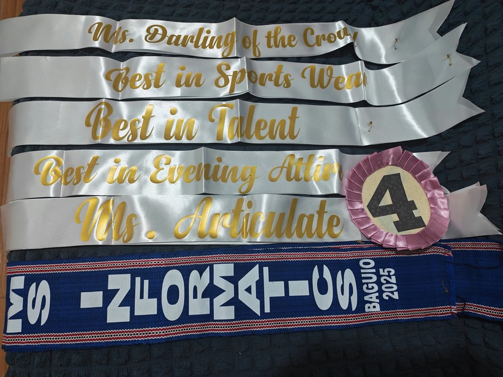
- 7Competition · Mar 2026WorldSkills Philippines 2026
- Gold Medalist
- Web Technology
- Provincial (Benguet) Skills Olympics
1/4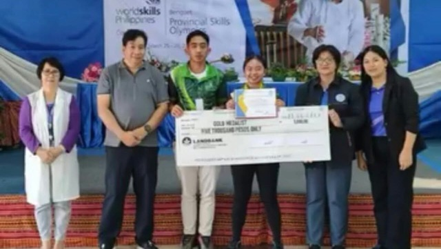

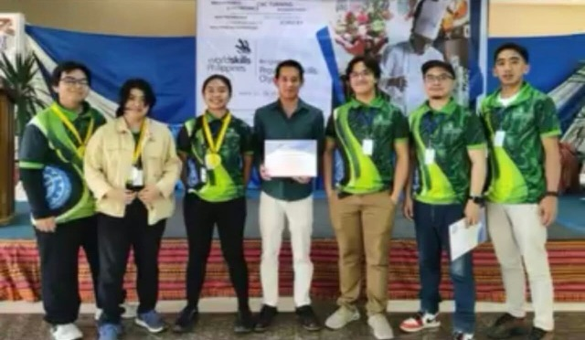